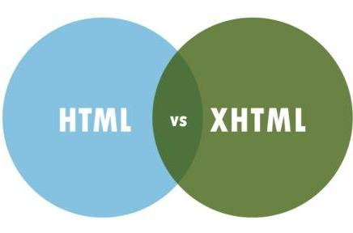
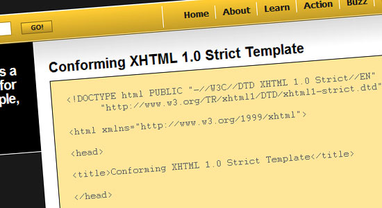
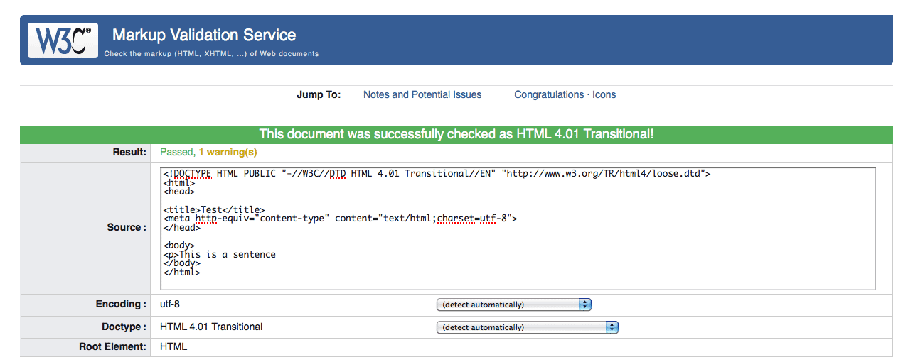

Para que una página de XHTML tenga validez tiene que seguir las reglas siguientes:

Es la versión más limpia y simple de HTML. Con este doctype sólo puedes usar las partes del HTML que se refieren a la estructura y, en general, no permite utilizar las partes que se relacionan con el estilo.

Esta es la versión mixta. Se permite el uso de etiquetas de estilo, que realmente no tienen cabida en HTML, pero que se introdujeron antes de que el CSS existiera. En general, es mejor mantener el marcado (HTML) y el estilo (CSS) totalmente independiente, ya que esto hace más fácil cambiar el aspecto de la web más tarde, e incluso compartir el mismo estilo en varias páginas web, pero si todavía no dominas HTML y CSS, este doctype seguramente sea la mejor elección.
| Transitional | Strict |
|---|---|
| Utiliza Transitional cuando tu página web se ajuste a las normas básicas XHTML, pero todavía utilices algunas etiquetas HTML para la presentación (estilo). | Utiliza Strict cuando tu página web se ajuste a las normas de XHTML y los usos de CSS para la separación total entre contenido y presentación. |
Enlaces a paginas de interes